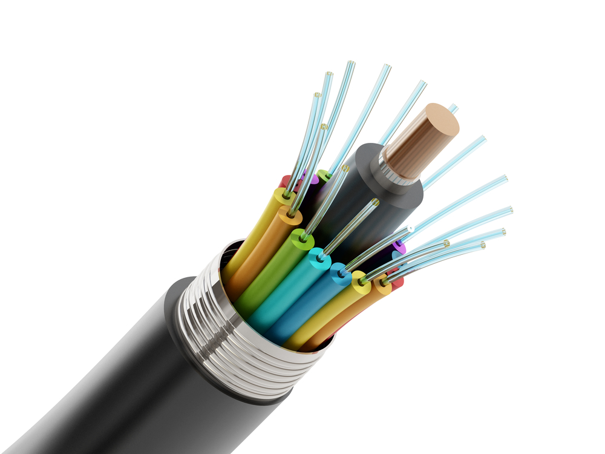
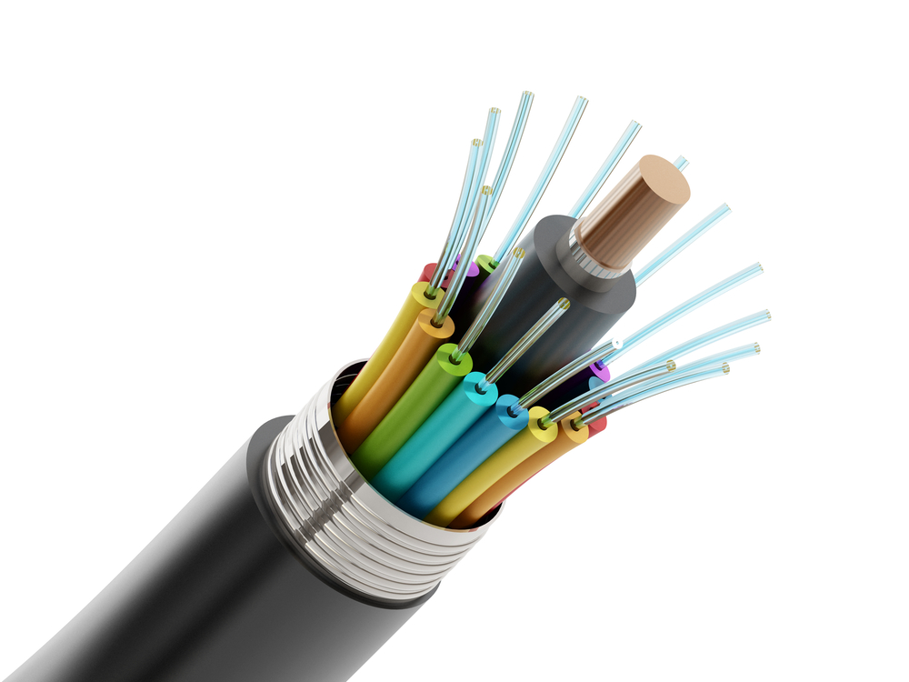

Delhi Infocom Services Private Limited is a startup company that provides a range of computer hardware, software and networking services. Here's a profile of the services that the company offers:
1. Computer Hardware:
Hardware services include installation, repair, and maintenance of desktops, laptops, printers, scanners and other peripherals. Our team of expert technicians ensures that all hardware issues are resolved quickly and efficiently.
2. Software Solutions:
Software solutions that cater to different sectors and businesses which include custom software development, software maintenance, software upgrades, and software installation. We also offer training and support to help our clients make the most of their software.
3. Maintenance AMC:
We provide comprehensive Annual Maintenance Contracts (AMC) for computers, peripherals, and networking equipment. Our AMC services include regular maintenance, updates, and repairs to ensure that our client's systems are always up-to-date and functioning optimally.
4. Communication and Telecommunication:
Solutions that cater to the needs of small, medium, and large enterprises. We offer services such as VoIP, video conferencing, messaging, and collaboration tools that help businesses stay connected and communicate effectively.
5. Networking and Servers:
DISPL provides end-to-end networking and server solutions which include design, installation, configuration, and maintenance of LAN, WAN, and VPN networks. We also provide server installation, configuration, and maintenance services that ensure that our clients' systems are always up and running.
6. Optical Fibre:
Our Company provides optical fibre solutions that cater to the needs of businesses and individuals. We offer installation, repair, and maintenance services for optical fibre networks, ensuring that our clients' networks are fast, reliable, and secure.
7. Surveillance:
DISPL provides surveillance solutions that cater to the needs of businesses and individuals. We offer installation and maintenance services for surveillance cameras and systems, ensuring that our clients' properties are secure.
8. Computer Peripherals:
Our company provides maintenance services for computer peripherals such as printers, scanners, and projectors. Our technicians are trained to diagnose and fix all kinds of issues related to computer peripherals, ensuring that our clients' equipment is always functioning optimally.
 
